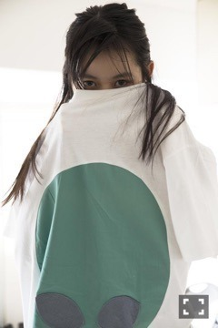

| 2016/07 17 Sun | よ。727回目 |
今日は「サマンサタバサ ガールズコレクション・レディーストーナメント2016」のスペシャルLIVEに出演しました！
野外だったので３曲で汗だく！
裸足でSummerは踊ってて楽しい曲だ！
まぶしそう
これはジャケ写の衣装(^O^)／
ピンクだよー
いい感じの壁だよ〜(^O^)／

犬いた(^O^)／
かわい(^O^)／

STUDY Extra Issue with Go Itami and Marika Ito 〜Free All Angels〜
即完と聞きました、、
部数が少ないというのもありますが、
嬉しいことです。。
ありがとうございます！
やっぱり本になるって特別なことです。
乃木坂のひとりとしての写真集や
このようなファッション写真集は
出したいという野望があります。
こちら貴重な一冊になりますので、
ぜひみなさんに見てほしい〜
ちょっとだけ私服も混ざってるよ。
熱海回のスピリッツでお世話になった
小山田さんにスタイリング
していただきました！
ファッションも撮影も楽しい(^O^)／
だいすき(^O^)／
まりか
コメント(504)
2016/07/17 20:24